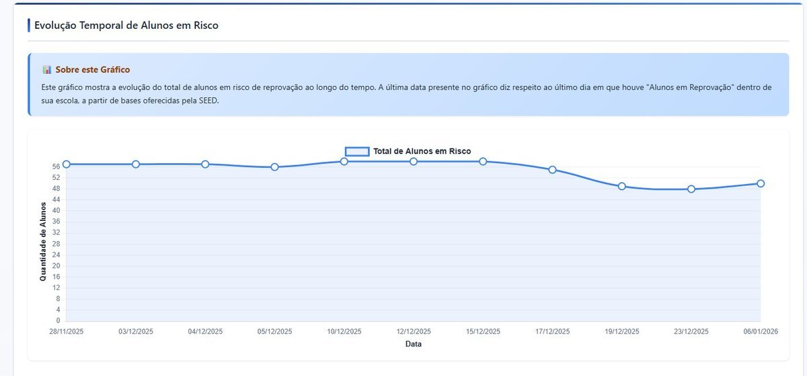

Contexto e Problema
A Secretaria de Estado da Educação de Sergipe necessitava de uma abordagem sistemática e baseada em dados para identificar escolas e estudantes em situação de risco educacional em múltiplas dimensões — abandono, reprovação, frequência insuficiente e baixo desempenho acadêmico. Sem um sistema integrado de indicadores, as intervenções eram reativas em vez de preventivas, e a alocação de recursos carecia de critérios objetivos de priorização.
O desafio era agravado pela necessidade de integrar dados de múltiplas fontes desconectadas: o sistema estadual de gestão de alunos, avaliações nacionais (SAEB), avaliações estaduais (SAESE), plataformas diagnósticas (Plurall) e índices socioeconômicos (INSE).
Imagens do Sistema



Solução Desenvolvida
Projetei e construí uma plataforma integrada de indicadores de risco em Python que processa a base completa de alunos do estado (~597 MB de registros individuais) e gera indicadores compostos de risco por escola. O sistema segue um pipeline estruturado de ETL:
- Extração de dados: Ingestão de arquivos brutos CSV/Excel de múltiplos sistemas educacionais com tratamento de codificação e tipos
- Limpeza e padronização: Tratamento de valores ausentes, normalização de códigos INEP, padronização de nomes de escolas e séries
- Cálculo de indicadores: Computação de percentuais de risco de abandono, reprovação, frequência, notas, distorção idade-série e participação no programa Pé de Meia por escola
- Classificação de risco: Categorização em níveis Baixo, Médio, Alto e Não Registrado
- Integração de avaliações: Cruzamento com dados de desempenho do SAEB 2023, SAESE 2024 e Plurall
- Geração de produto final: Planilha consolidada com indicadores por escola acompanhada de dicionário de dados
Bases de Dados Utilizadas
- Base completa de alunos (tb_dados_aluno.csv — 597 MB)
- Dados de frequência escolar (tb_dados_frequencia.csv)
- Registros de professores (tb_dados_professor.csv)
- Microdados do SAEB 2023 (INEP/MEC)
- Dados do SAESE 2024 (avaliação estadual)
- Dados de avaliação diagnóstica Plurall
- INSE 2021 — Índice Socioeconômico (INEP)
Tecnologias Utilizadas
Resultados e Impacto
A plataforma permitiu à Secretaria de Educação identificar objetivamente as escolas com maior concentração de estudantes em risco, direcionando o acompanhamento pedagógico às 10 Diretorias Regionais de Educação (DEA + DRE01 a DRE09). Os indicadores foram utilizados diretamente por gestores para priorização de recursos e definição de estratégias de intervenção, estabelecendo uma ferramenta sistemática de tomada de decisão baseada em evidências para a rede educacional estadual.